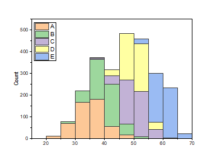

Gestapelte Histogramme
Stacked-Histograms-Graph
- 
Datenanforderungen
Markieren Sie zwei oder mehrere Y-Spalten oder einen Bereich aus zwei oder mehreren Y-Spalten.
Diagramm erstellen
Wählen Sie die gewünschten Daten aus.
Wählen Sie im Menü .
Vorlage
HistStacked.OTPU
Hinweise
- Zuvor zeichnete der Menübefehl Gestapelte Histogramme jeden ausgewählten Datensatz in seinem eigenen Layer. Dieser Diagrammtyp wird jetzt als Histogramm mit mehreren Feldern bezeichnet.
- Dieses neuere gestapelte Histogramm zeichnet alle Datensätze in einem einzelnen Layer.